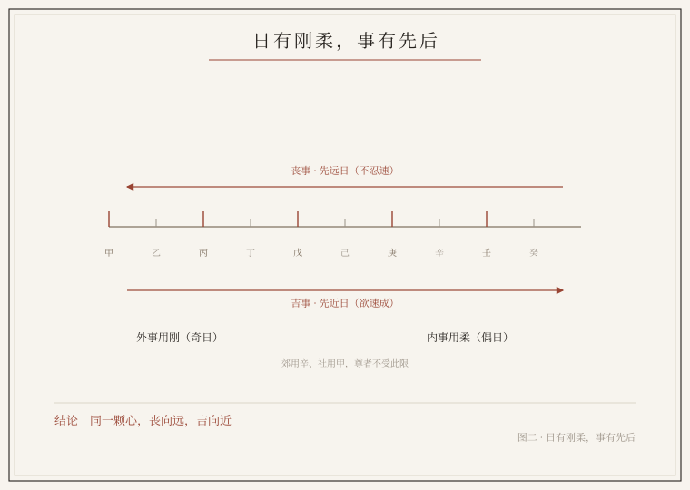

曲礼上 · 一·一百一十四 · 第 112 课
外事用奇日，内事用偶日；卜筮择日，有远某日、近某日之称；丧事先远日，吉事先近日；命龟之辞曰「假尔泰龟有常」。
说什么事：外事以刚日，内事以柔日。凡卜筮日：旬之外曰远某日，旬之内曰近某日。丧事先远日，吉事先近日。曰：「为日，假尔泰龟有常，假尔泰筮有常。」
落在哪一层：制，兼及礼意。讲的是「择日」这一门学问的骨架。
为何编在此位：上节收于人门之问，此节转入用日之法。敬人之后，敬时。
【经】外事以剛日，內事以柔日。凡卜筮日：旬之外曰遠某日，旬之內曰近某日。喪事先遠日，吉事先近日。曰：「為日，假爾泰龜有常，假爾泰筮有常。」
【注】順其出為陽也。出郊為外事。《春秋傳》曰：「甲午祠兵」。順其居內為陰。旬，十日也。孝子之心。喪事，葬與練祥也。吉事，祭祀冠取之屬也。命龜筮辭。龜筮於吉凶有常，大事卜，小事筮。
刚日／柔日 疏「刚，奇日也。十日有五奇、五偶，甲、丙、戊、庚、壬五奇为刚也」；「乙、丁、己、辛、癸五偶为柔」。
外事／内事 注「出郊为外事」；疏「内事，郊内之事也」。
旬 注「十日也」。
远某日／近某日 疏「今月下旬筮来月上旬，是旬之外日也……士于旬初即筮旬内之日」。
丧事先远日 注「孝子之心」。疏「非孝子之所欲，但制不获已，故卜先从远日而起，示不宜急」；引《左传》「卜葬先远日，辟不怀」。
吉事先近日 疏「吉事，谓祭祀、冠婚之属」。
泰龟／泰筮 注「命龟筮辞」。疏「泰，大中之大也。欲褒美此龟筮」。
有常 疏「言汝泰龟泰筮决判吉凶，分明有常也」。
外事用奇日，内事用偶日。凡卜筮择日：十日以外的称「远某日」，十日以内的称「近某日」。丧事先从远日卜起，吉事先从近日卜起。命龟之辞说：「为择此日，借重你这大龟，你的判断有常。」
一节四层：日分刚柔，日分远近，事分丧吉，辞有常信。前三层是用法，末一层是心法——把决定交出去的时候，要说得像样。
第一层 刚柔配内外 注「顺其出为阳」「顺其居内为阴」。不是迷信，是一套让日子有方向的记号。
第二层 郊社之例外 疏指出：郊用辛、社用甲，皆不合外刚内柔。故曰「郊社尊，不敢同外内之义」。规则之上还有尊卑。
第三层 丧先远、吉先近 同为择日，方向相反。丧从远起，是不忍速；吉从近起，是欲速成。同一条心，两个方向。
第四层 假尔有常 疏「假，因也；尔，汝也；泰，大中之大」。命辞不命令龟，而是借重龟。语气里全是敬。
与今日何干 做决定之前，先把问题说清楚，把凭据说明白。仪式的价值，多半在这一段说辞上。
| 左 | 右 |
|---|---|
| 外事以刚日 | 出郊为外，顺其阳，用奇日 |
| 内事以柔日 | 居内为阴，用偶日 |
| 旬之外曰远某日 | 今月下旬筮来月上旬 |
| 旬之内曰近某日 | 士于旬初筮旬内之日 |
| 丧事先远日 | 不忍速，辟不怀 |
| 吉事先近日 | 欲速成，急于祭享 |
| 假尔泰龟有常 | 借重之辞，非驱使 |
画一条横向的日子刻度线，线上十个短刻，奇位刻痕深、偶位刻痕浅；线之上画两道方向相反的短箭头：一道自右向左指（表示丧事先远），一道自左向右指（表示吉事先近）。线下方另有一枚龟甲与一束蓍草并列，甲背朝上。不画人、不写文字。赭色只用在两道箭头。
